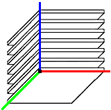
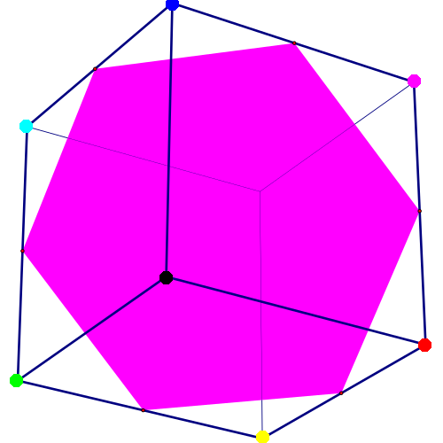
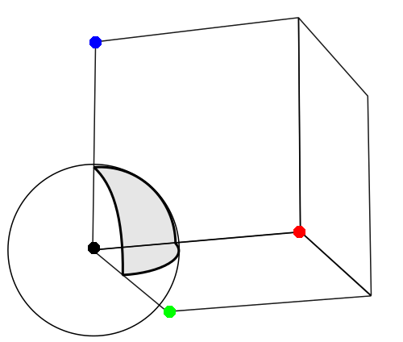
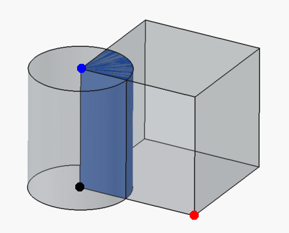
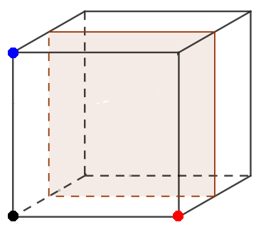
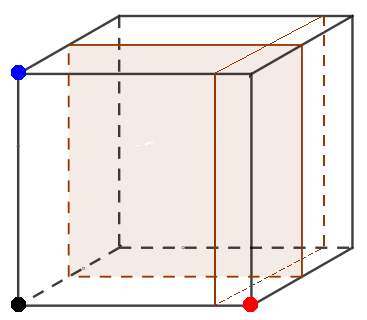
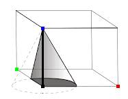

It is often useful to display text on a colored background. Naturally, the text should be visible on the colored background.
This page examines various methods of choosing a foreground color (i.e. text) for a given background color. In most cases, it is assumed that the foreground color must either be black or white.
There are 256^3 = 16,777,216 colors in the (8-bit) RGB color space. The two color-grids below allow viewing any color within that space. The left color-grid contains 'major' steps where each step is 16 units. The right color-grid contains 'minor' steps where each step is 1 unit. The 'minor' color-grid is generated by clicking on a square in the 'major' color-grid. The RGB values of the foreground and background colors are shown in a tooltip.
Comparisons between Methods ignores the 'minor' color-grid because its colors are so similar.

| Method: | |
|---|---|
| Color: | # Only for Color method. |
| Radius: | Only for Sphere, Cone, and Cylinder method. |
| Height: | Only for Cone method. |
| Swap Fg & Bg: | |
| Compared to: |
Use a single color for the foreground color.
If any color other than black or white is used, this method differs from the W3C Method by 4096 squares.
If the color is white is used, this method differs from the W3C Method by 2448 squares.
If the color is black is used, this method differs from the W3C Method by 1648 squares.
A single color is not going to be readable against all possible background colors, but can work fine if the background colors are restricted.
Use the inverted background color as the foreground color.
This method differs from the W3C Method by 4095 squares. The only square in common is a black background with a white foreground.
This method works well for any color that is not near gray. This text: BitwiseNot illustrates the worst case. It has a foreground color of #7f7f7f and a background color of #808080.

Compute the distance to the black point and to the white point. Return whichever point is farthest away.
This method differs from the W3C Method by 928 squares.
// r, g, b must be in range [0, 255]. const Rb = Math.pow(r, 2); const Gb = Math.pow(g, 2); const Bb = Math.pow(b, 2); const Rw = Math.pow(r-255, 2); const Gw = Math.pow(g-255, 2); const Bw = Math.pow(b-255, 2); const distB = Rb + Gb + Bb; const distW = Rw + Gw + Bw; return (distB < distW ? '#ffffff' : '#000000');

All squares within the sphere are white. All other squares are black.
A radius of 0.84 differs from the W3C Method by 802 squares.
// r, g, b must be in range [0, 255]. const radius = 0.84; // Arbitrary. const R = Math.pow(r/255, 2); const G = Math.pow(g/255, 2); const B = Math.pow(b/255, 2); const dist = Math.sqrt(R + G + B); return (dist <= radius ? '#ffffff' : '#000000');

All squares within the cylinder are white. All other squares are black.
A radius of 0.63 differs from the W3C Method by 554 squares.
// r, g, b must be in range [0, 255]. const radius = 0.63; // Arbitrary. const R = Math.pow(r/255, 2); const G = Math.pow(g/255, 2); const B = 0; const dist = Math.sqrt(R + G + B); return (dist <= radius ? '#ffffff' : '#000000');

Divides the color cube into two parts. All points in one part are white. All other points are black.
If all points where g <= 96 are white, this method differs from the W3C Method by 504 squares.
// g must be in range [0, 255]. // 96 = 0x60 return (g <= 96 ? '#ffffff' : '#000000');
Adding a second (vertical) slice can improve on a single slice.

If r <= 192 and g <= 112, this method differs from the W3C Method by 282 squares.
// r and g must be in range [0, 255]. // 192 = 0xC0; 112 = 0x70 return ((r <= 192 && g <= 112) ? '#ffffff' : '#000000');
Adding a third (horizontal) slice in order to restrict the blue values will not offer any improvement. However, modifying where the red and green slices occur depending on the blue value can improve the 'fit'.

All squares within the cone are white. All other squares are black.
With an offset of zero, a radius of 0.70, and a height of 5.02, this Method differs from the W3C Method by 544 squares.
With an offset of 48, a radius of 0.61, and a height of 4.50, this Method differs from the W3C Method by 276 squares.
The code below uses an offset cone which gives slightly better results than a cone that is not offset.
// r, g, b must be in range [0, 255]. const coneRadius = 0.61; const coneHeight = 4.45; const R = Math.pow((r-48)/255, 2); // Subtract 48 to shift cone to the right. const G = Math.pow(g/255, 2); const B = b/255.0; const radius = Math.sqrt(R + G); const scaledRadius = coneRadius * (coneHeight - B)/coneHeight; return (radius < scaledRadius ? '#ffffff' : '#000000');
Uses a formula to approximate the W3C Method.
This method offers two different formulas. Both formulas use 'magic' values (just like the W3C Method) but are much simpler than the W3C Method. One formula differs from the W3C Method by 91 squares. The other formula differs from the W3C Method by 86 squares.
y^4 = x // This curve looks like a good fit. (x^3 could also work.)
g^4 = r // Adapt curve to the red-green axes.
g^4 = -r // Negate r to reflect the curve about the g axis.
g^4 = S - r // Subtract r from a constant to shift curve left.
g^4 = S - r - C*b // Shift curve to the left as the blue value increases.
(H*g)^4 = S - r - C*b // Larger H 'opens' the curve. Smaller H 'squeezes' the curve.
(H*(g/255))^4 = S - (r/255) - C*(b/255) // Scale the r, g, and b color values.
((H/255)*(g/255))^4 = S/255 - (r/255) - (C/255)*(b/255) // Scale the S, H and C constants.
((H/255)*(g/255))^4 = (S - r)/255 - b*C/(255*255) // Re-arrange.
Values for S, H, C must be found that 'fit' the W3C surface as closely as possible. Looking at the color-grid for the W3C Method:
Using (224, 492, 34) for (S, H, C) generate a surface that differs from the W3C Method by 194 squares. Using (224, 492, 34) as a starting point, a computer search finds three tuples: (238, 448, 52), (241, 459, 52), and (242, 455, 53) that differ from the W3C Method by 86 squares. The first tuple is arbitrarily chosen for the (S, H, C) constants.
((448/255)*(g/255))^4 = (238 - r)/255 - b*52/(255*255) // Substitute constants
(448^4/255^8) * g^4 = (238 - r)/255 - b*52/(255*255) // Re-arrange
(448^4/255^6) * g^4 = 255*(238 - r) - b*52 // Multiply by 255*255
(448^4/(52*255^6) * g^4 = 255*238/52 - r*255/52 - b // Divide by 52
g^4 / 354921.55062 = 1167.11538 - 4.90385*r - b // Evaluate
0 = 1167.11538 - 4.90385*r - b - g^4/354921.55062 // Re-arrange
Converting the equation to an inequality expression in a Javascript function gives:
// FORMULA 1 (Differs from the W3C Method by 86 squares.) // r, g, b must be in range [0, 255]. return (0 < 1167.11538 - 4.90385*r - b - Math.pow(g, 4) / 354921.55062 ? "#ffffff" : "#000000");
With a bit of rounding, Formula 1 can be simplified, but results in a slightly less accurate surface.
// FORMULA 2 (Differs from the W3C Method by 91 squares.) // r, g, b must be in range [0, 255]. return (0 < 1200 - 5*r - b - Math.pow(g/24, 4) ? "#ffffff" : "#000000");
By coincidence, the constants are somewhat connected: 5 * 24 * 10 = 1200.
Uses a lookup table to approximate the W3C Method.
This Method is about ten times faster than the (unoptimized) W3C Method and differs from it by zero squares. (i.e. This Method exactly matches the surface of the W3C Method, excluding the minor color-grid.)
The squares in each layer of the minor color-grid will be either all black or all white. This is not true of the W3C Method.
// r, g, b must be in range [0, 255].
const lookupTable = [
[15,15,15,14,14,13,12,10,6],
[15,15,15,14,14,13,11,10,6],
[15,15,15,14,14,13,11, 9,6],
[15,15,15,14,13,13,11, 9,5],
[15,15,14,14,13,12,11, 9,5],
[15,15,14,14,13,12,11, 9,4],
[15,14,14,14,13,12,11, 8,3],
[14,14,14,13,13,12,10, 8,0],
[14,14,14,13,12,11,10, 7,0],
[14,14,13,13,12,11, 9, 7,0],
[13,13,13,13,12,11, 9, 6,0],
[13,13,13,12,11,10, 8, 4,0],
[13,13,12,12,11, 9, 7, 1,0]
]
const R = parseInt(r/16);
const G = parseInt(g/16);
const B = Math.max(parseInt(b/16) - 3, 0);
if (G >= 9) return '#000000';
return (R < lookupTable[B][G] ? '#ffffff' : '#000000');
This is a model developed by W3C and is the standard by which all Methods on this page are compared.
The model is not intutitive, and uses 'magic' numbers, which are (somewhat) arbitrary.
The W3C's defines the Relative Luminance of a color, which can be computed with the following Javascript functions:
// n must be in range [0, 255].
function scale(n) {
const c = n / 255.0;
if (c <= 0.03928) {
return c / 12.92;
}
return Math.pow(((c + 0.055) / 1.055), 2.4);
}
// r, g, b must be in range [0, 255].
function relativeLuminance(r, g, b) {
const R = scale(r);
const G = scale(g);
const B = scale(b);
// 0.2126 + 0.7152 + 0.0722 = 1.0000
return (0.2126 * R) + (0.7152 * G) + (0.0722 * B);
}
W3C defines the Contrast Ratio of two colors to be:
L1 + 0.05 ----------- L2 + 0.05
where, L1 is the Relative Luminance of the lighter of the colors,
and L2 is the Relative Luminance of the darker of the colors.
The RL(x) function returns the Relative Luminance of color 'x'.
_ _
| |
| RL(WHITE) + 0.05 RL(COLOR) + 0.05 |
If | ---------------- > ----------------- | then COLOR has a higher contrast with WHITE than with BLACK.
| RL(COLOR) + 0.05 RL(BLACK) + 0.05 |
|_ _|
The Relative Luminosity of WHITE is 1.0. The Relative Luminosity of BLACK is 0.0. Computing the Relative Luminosity of COLOR will be postponed. Substituting and simplifing gives:
( RL(WHITE) + 0.05 ) * ( RL(BLACK) + 0.05 ) > ( RL(COLOR) + 0.05 )^2
( 1.0 + 0.05 ) * ( 0.0 + 0.05 ) > ( RL(COLOR) + 0.05 )^2
Sqrt(1.05 * 0.05) - 0.05 > RL(COLOR)
0.179129 > RL(COLOR)
In other words, if the Relative Luminosity of COLOR is less than 0.178129, than COLOR has greater contrast with WHITE, otherwise COLOR has a greater contrast with BLACK.
If written as a Javascript function, it would look like this:
// r, g, b must be in range [0, 255]. return (relativeLuminance(r, g, b) > 0.179129 ? '#ffffff' : '#000000');
The table below shows the Relative Performance for each Method. For example, the Distance Method took 11.9 times as long as calling nothing '(None)'. The raw timings were created by calling each Method for all red, green, and blue values (a total of 256^3 = 16,777,216 calls for each Method). The Relative Performance values were computed by dividing the raw timings by the time required to call no method.
Diff is the number of squares that differed from the (4096) squares of the W3C Method.
The table below is informational, not authoritative. The timing methodology was simplistic, none of the Method functions were optimized and Javascript engines are optimized in different ways.
| Method | Diff | Rel. Perf. |
|---|---|---|
| (None) | N/A | 1.0 |
| Slice | 504 | 1.5 |
| W3CApprox2 | 91 | 5.2 |
| W3CApprox1 | 86 | 6.0 |
| Distance | 928 | 11.9 |
| W3CLookup | 0 | 14.3 |
| W3C | 0 | 161.8 |
| Color | 1648 | 184.6 |
| BitwiseNot | 4095 | 217.4 |
| Cylinder | 554 | 415.4 |
| Sphere | 802 | 417.3 |
| Cone | 276 | 846.4 |